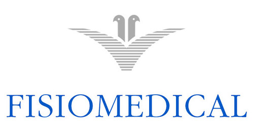
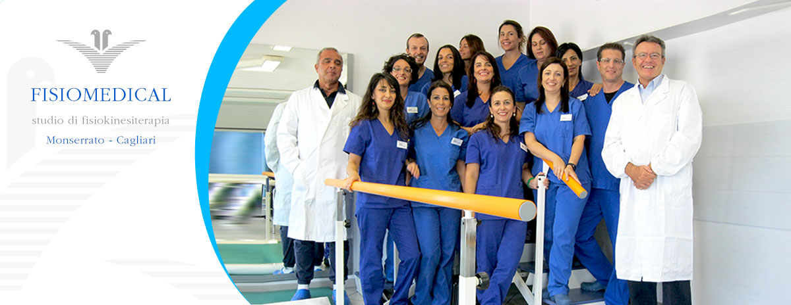
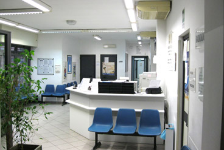
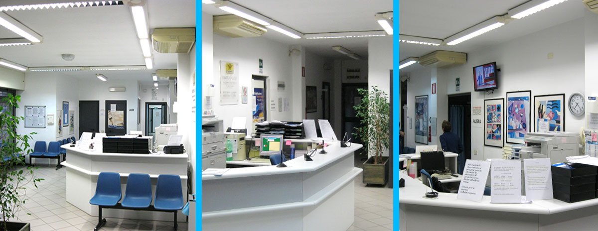
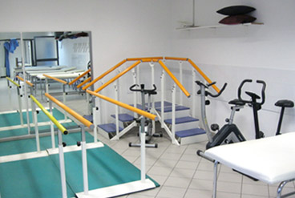
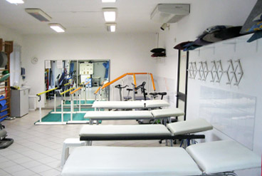

Back School
Programma di educazione posturale e ginnastica specifica per la schiena (Scuola della Schiena), per prevenire e gestire il mal di schiena. Centro affiliato Back School.

Fisiomedical: efficienza, calore umano e professionalità
Studio di Fisiokinesiterapia accreditato e convenzionato · Monserrato — Cagliari
Accreditamento istituzionale definitivo n°1173 del 21-10-2013
Tre dei trattamenti che eseguiamo, con attrezzature professionali e personale qualificato.
Programma di educazione posturale e ginnastica specifica per la schiena (Scuola della Schiena), per prevenire e gestire il mal di schiena. Centro affiliato Back School.

Terapia a radiofrequenza che stimola i processi riparativi dei tessuti: indicata per patologie muscolari, tendinee e articolari e per la riduzione del dolore.

Terapia strumentale ENF per la neuromodulazione del dolore e il supporto al recupero funzionale, nelle problematiche muscoloscheletriche.
Fisiomedical: efficienza, calore umano e professionalità
Esperienza, qualifica e garanzie istituzionali.
Erogabili in convenzione SSN o in libera professione, in regime ambulatoriale e domiciliare.
Valutazione medica specialistica per diagnosi e piano riabilitativo personalizzato.
Trattamenti per il recupero funzionale e la riduzione del dolore muscoloscheletrico.
Riabilitazione post-operatoria e post-traumatica per il recupero della mobilità.
Radiofrequenza per accelerare la guarigione di patologie muscolari, tendinee e articolari.
Massaggi terapeutici e decontratturanti per tensioni muscolari e circolazione.
Laser ad alta potenza per trattamenti antidolorifici e antinfiammatori mirati.
La prenotazione si effettua per telefono. Ti guidiamo noi, passo dopo passo.
Chiama la segreteria allo 070 581187 (oppure 070 572500), indica la prestazione di cui hai bisogno e fissiamo insieme il giorno e l'orario più comodi.
Oltre 20 anni al servizio della salute dei pazienti di Cagliari e provincia.
Fisiomedical è uno studio di fisiokinesiterapia (Medicina Fisica e Riabilitazione) con sede a Monserrato, dotato di tecnologie all'avanguardia e di un team multidisciplinare qualificato, in grado di affrontare le più varie patologie dell'apparato muscoloscheletrico.
Eroghiamo prestazioni in regime ambulatoriale e domiciliare, secondo le direttive dell'Assessorato Regionale alla Sanità della Regione Sardegna. La struttura è priva di barriere architettoniche.





Siamo a Monserrato, facili da raggiungere in auto, in metro e con i mezzi.
La segreteria è a disposizione per qualsiasi informazione sulle prestazioni erogate.
Lunedì–Venerdì
8:00–13:00 · 15:00–19:00